Otsuchi
Otsuchi · Iwate
Otsuchi
Highlighted on the Iwate map.
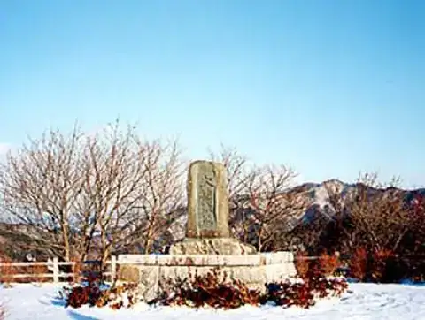
Stay
三陸花ホテルはまぎく
Sanriku Hana Hoteru Hamagiku
Hotel in Otsuchi, Iwate.
民宿さんずろ家
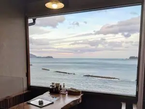
Minshuku Sanzuro Ie
Guesthouse (minshuku) in Otsuchi, Iwate.
Dining
さんずろ家
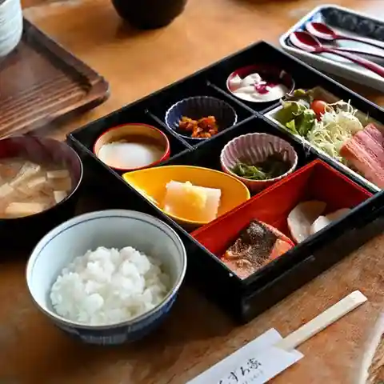
Sanzuro Ie
Local-cuisine restaurant in Otsuchi, Iwate.
中華 一
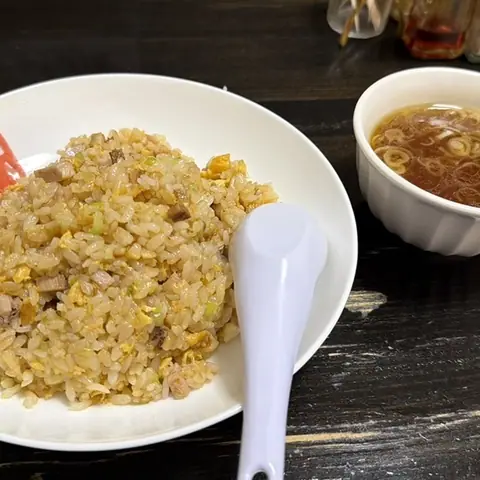
Chuuka Ichi
Chinese restaurant in Otsuchi, Iwate.
凛々家
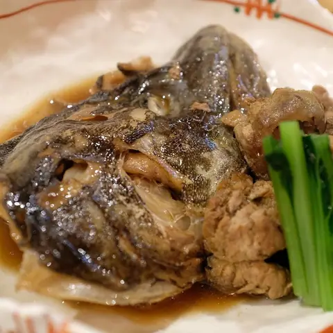
Rinrin Ie
Shokudo diner in Otsuchi, Iwate.
鮨辰
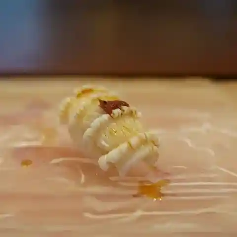
Sushi Tatsu
Sushi restaurant in Otsuchi, Iwate.
割烹岩戸
Kappou Iwato
Japanese restaurant in Otsuchi, Iwate.
よりみちそばみち
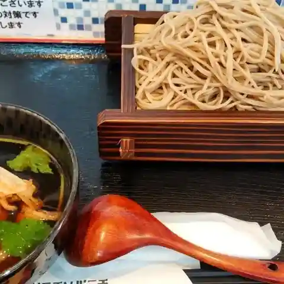
Yorimichisobamichi
Soba restaurant in Otsuchi, Iwate.
一膳
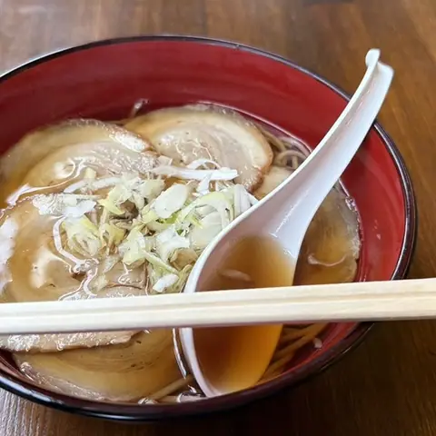
Ichi Zen
Standing soba counter in Otsuchi, Iwate.
お食事処 蓬莱島
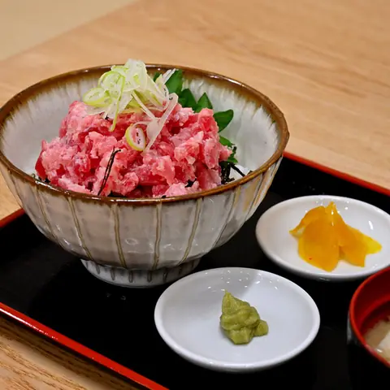
O Shokuji Tokoro Hourai Shima
Shokudo diner in Otsuchi, Iwate.
どんりゅう庵
Donryuu Iori
Curry restaurant in Otsuchi, Iwate.
麺匠 ときしらず
Men Takumi Tokishirazu
Ramen shop in Otsuchi, Iwate.
末広食堂
Suehiro Shokudou
Ramen shop in Otsuchi, Iwate.
このさん食堂
Konosan Shokudou
Shokudo diner in Otsuchi, Iwate.
もりかまど
Morikamado
Japanese sweets café in Otsuchi, Iwate.
食処 居酒屋 おおとら
Shoku Tokoro Izakaya Ootora
Izakaya in Otsuchi, Iwate.
タカマス民宿
Takamasu Minshuku
Inn restaurant in Otsuchi, Iwate.
あるご
Arugo
Takoyaki stand in Otsuchi, Iwate.
大光そば
Oomitsu Soba
Noodle shop in Otsuchi, Iwate.
ムーミン
Muumin
Coffee shop in Otsuchi, Iwate.
七福食堂
Shichi Fuku Shokudou
Shokudo diner in Otsuchi, Iwate.
菓子工房エルマーノ
Kashi Koubou Erumaano
Western sweets shop in Otsuchi, Iwate.
チャリカフェ
Charikafe
Daifuku shop in Otsuchi, Iwate.
母ちゃんハウスだぁすこ 沿岸店
Kaachan Hausu Daasuko Engan Mise
Ramen shop in Otsuchi, Iwate.
炭火焼肉だいまる
Sumibi Yakiniku Daimaru
Yakiniku (grilled meat) restaurant in Otsuchi, Iwate.
Sights
Namiita Beach
Namiita Beach is known for its "universe waves," where waves come in from the sea and do not return.
Iso Ramen (Seafood Ramen)
Iso Ramen is said to have been created in Otsuchi Town in 1969.
Ankoro Persimmons
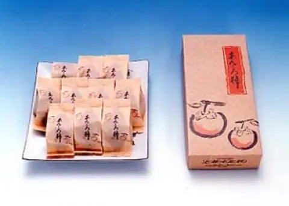
The second generation of Hermano is so skilled that they even opened a store at Iwate Confectionery Expo.
Sakiyama Observatory
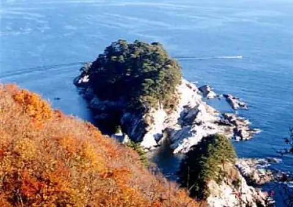
The Ria Scenic Line runs from Kirikiri towards Akahama. This observation deck is about 10 minutes by car from Kirikiri Station.
Horaijima Island
This gourd-shaped island floating in Otsuchi Bay is selected as one of the New Eight Views of Otsuchi and represents the image of Otsuchi Town.
Otsuchi Town Cultural Exchange Center Oshacchi
Otsuchi Town Cultural Exchange Center Oshacchi
Mt. Kujira
Kujirayama is located overlooking the Namiita coast and is 610m above sea level.
Kirikiri Coast
The word "Kirikiri" is said to come from the Ainu word for "singing sand," which makes a "kirikiri" sound when walking on the beach.
Niiyama Plateau
A plateau with vast expanses of fields and romantic white birch forests.
Otsuchi Castle Ruins
The ruins of Otsuchi Castle, which is familiar to the townspeople as a castle mountain, was the residence of the Otsuchi clan (actual height: 10,000 koku, economic power: 70,000 koku) for generations.
Kirikiri Zenbei (Maekawa Zenbei) successive graves
Kirikiri Zenbei (Maekawa Zenbei) successive graves